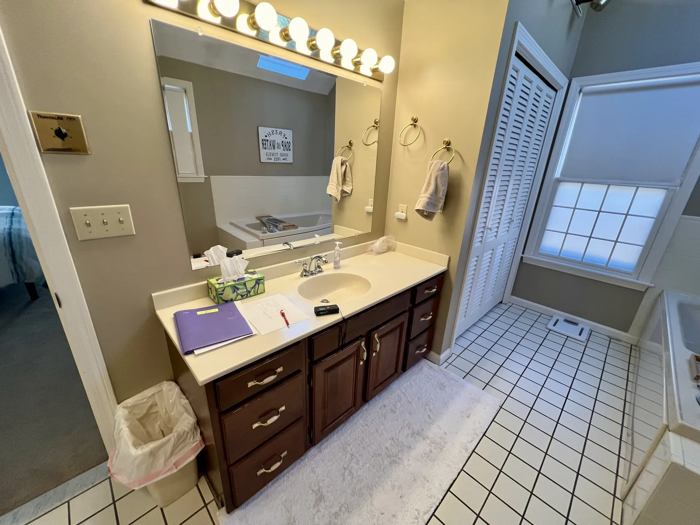
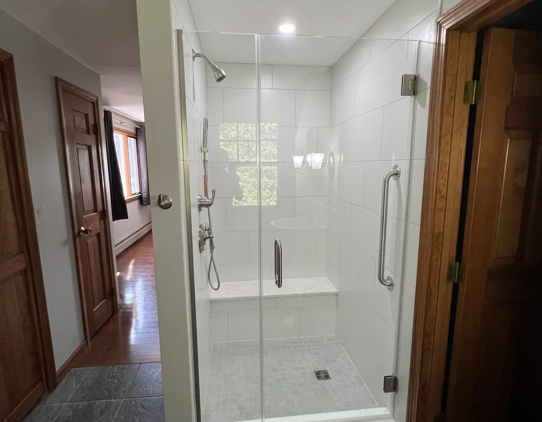
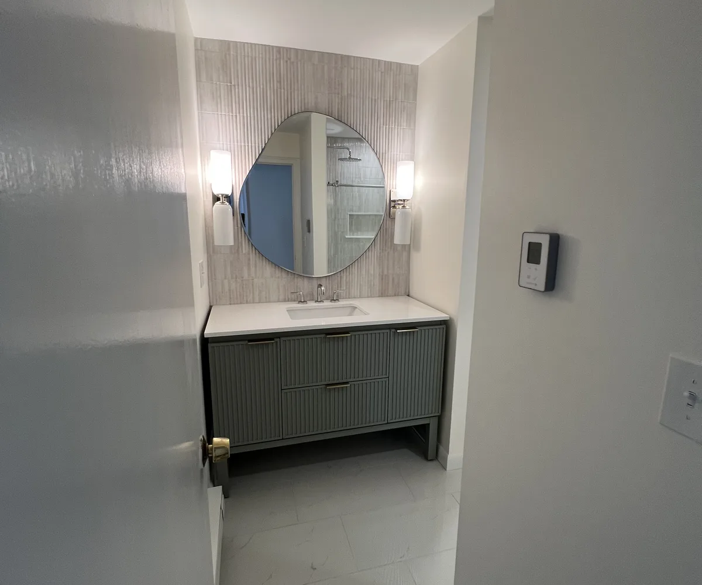

Groveland Bathroom Remodel Contractors
Bathroom Remodeling in Groveland, MA for homeowners who want the details handled right
Bathroom Remodeling in Groveland, MA should feel organized before the first tile is removed. DeFaria Construction helps Groveland homeowners plan the bathroom remodel, rough-in, waterproofing, fixtures and finish details with direct owner-led communication.
Local search focus
Groveland Bathroom Remodeling starts behind the finished tile.
Groveland bathroom projects often start with practical layout and storage needs, then move into tile, lighting and fixtures once the hidden work is clear.
This page is built for homeowners comparing Bathroom Remodel Contractors in Groveland instead of guessing from a generic service page. The goal is to connect the search to a local estimate path, real project photos and the details that decide whether the finished bathroom will hold up.
- Bathroom Remodel planning for the 01834 ZIP code area.
- Bathroom Renovations with waterproofing, ventilation and finish coordination in the same scope.
- Direct communication from the first walkthrough to the final walkthrough.
The scope
What a full Groveland Bathroom Remodel can include
A strong bathroom remodel is not just new tile. It starts with the layout, the rough-in, the condition behind the walls and the daily routine the room has to support after the crew leaves.
- Plumbing rough-in, fixture placement and shower or tub planning.
- Waterproofing, tile preparation, grout lines and finish sequencing.
- Vanity, lighting, ventilation, trim and final details coordinated before completion.
Groveland bathroom renovations need exact scope control around plumbing, electrical, ventilation and finish details before scheduling tightens.
Local planning notes
What changes the bathroom remodeling conversation in Groveland
Homeowners in Groveland and nearby areas such as Groveland Center, Merrimack River area, Washington Street corridor are usually trying to solve a practical daily problem first: a bathroom that feels dated, cramped, hard to clean or risky behind the walls.
That makes Bathroom Renovations in Groveland less about rushing to a visible before-and-after and more about controlling decisions. DeFaria looks at the existing structure, fixture placement, ventilation, waterproofing and finish transitions so the final bathroom feels deliberate.
For 01834, the local page makes the offer specific without becoming thin. It helps a homeowner searching for Bathroom Remodeling understand why the estimate starts with scope clarity, not just a list of materials.
City-specific planning
Groveland bathroom renovations should balance function and finish
Groveland bathroom remodeling often starts with practical goals: more storage, easier cleaning, better lighting or a shower that finally fits the household. The right contractor turns those goals into a sequence before the room is opened.
DeFaria’s local page should make the construction process easier to understand. Rough-in, waterproofing, tile preparation, ventilation and finish carpentry all need to connect so the finished bathroom feels intentional.
For Groveland homeowners, the value is clarity. The page explains how the estimate starts, what details influence the scope and why owner-led communication matters during an active-home remodel.
- Translate daily frustrations into construction decisions.
- Coordinate tile, lighting and vanity placement early.
- Keep moisture control visible in the estimate.
- Use city-specific copy to answer local search intent.
Local decision layer
What makes a Groveland bathroom estimate different
A Groveland remodel may start with a simple request, but the useful estimate has to translate that request into the construction steps behind it. Better storage might affect vanity size. Better lighting may affect electrical planning. A cleaner shower may depend on waterproofing and wall prep.
The page uses Groveland as a practical search entry point for homeowners who want the contractor to explain the order of decisions before they spend time choosing finishes.
Project photos
Bathroom Remodeling photos for Groveland homeowners
Real project photography helps a homeowner judge finish level, tile work and construction cleanliness before requesting a bathroom remodeling estimate.



Areas covered
Bathroom Renovations across Groveland neighborhoods and ZIP codes
DeFaria Construction supports bathroom remodeling searches across Groveland and nearby Essex County towns, giving visitors enough local context to decide whether DeFaria is the right fit before they call.
- Groveland Center
- Merrimack River area
- Washington Street corridor
- Parker River area
- 01834
Experience
Why this Groveland page is built for real homeowners, not just keywords.
DeFaria Construction is a local construction and remodeling company serving homeowners and business owners across Middlesex County and Essex County. With direct owner involvement from Luiz DeFaria and BBB A+ credibility in the trust stack, this page is written around real scope, waterproofing and finish coordination, not a city name dropped into a template.
Every Groveland bathroom project is owner-led from the first walkthrough to the final one, with the visible design decisions connected to the work that sits behind the walls.
Someone searching for Bathroom Remodeling in Groveland, MA should understand the scope, the ZIP codes covered and how to start a direct estimate conversation before they pick up the phone.
Call (617) 893-2221 for a free estimateFAQ
Common questions about bathroom remodeling in Groveland
What bathroom remodeling work does DeFaria Construction handle in Groveland?
In Groveland, DeFaria Construction handles plumbing rough-in, waterproofing, tile, vanities, fixtures, ventilation and finish carpentry for a full or partial bathroom remodel.
What should homeowners know before starting a bathroom remodel in Groveland?
A Groveland bathroom remodel should start with layout, moisture control, fixture placement and the condition of the existing walls, floor and plumbing before finish materials are selected.
Does DeFaria handle bathroom renovations in the 01834 area?
Yes. DeFaria Construction serves homeowners in Groveland and the 01834 area with bathroom renovations, finish coordination and clear estimate conversations.
How do Bathroom Remodel Contractors avoid moisture problems in Groveland homes?
Good Bathroom Remodel Contractors prevent moisture issues by checking waterproofing, ventilation, plumbing rough-in and tile preparation before the visible finish work begins.